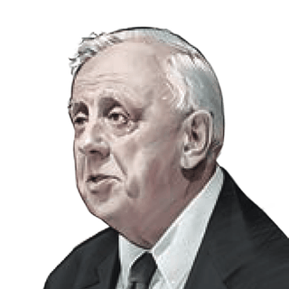

나의 자유가 먼저일까,
우리 모두의 좋음이 먼저일까?
개인의 자유와 권리(개인선)가 공동체를 위한 공동선과 부딪힐 때, 무엇을 더 강조하느냐에 따라 자유주의와 공동체주의로 나뉩니다. 체육대회 반티 사례 하나로 롤스와 매킨타이어의 생각을 차례로 따라가 봅시다.


체육대회 날, 모두 같은 반티를 입어야 하는가?
✋ 먼저 내 생각부터! 모두 같은 반티를 입는 것에 나는…
예) 입고 싶은 옷을 스스로 고를 자유
예) 반 전체의 소속감과 단결
롤스 1921~2002
미국의 현대 철학자·윤리학자로, 공정한 절차를 통해 합의된 것이라면 정의롭다고 보는 ‘공정으로서의 정의’를 주장했습니다. 롤스는 무엇보다 개인의 기본적 자유를 지키려 했습니다.
모든 사람은 기본적 자유를 누릴 수 있는 평등한 권리를 가져야 합니다. 다수의 이익을 위해 개인의 기본적 자유가 침해되는 것은 허용되지 않습니다.
— 롤스, 『정의론』제1원칙의 우선성과 자유주의 더 알아보기
롤스가 제시한 정의의 원칙 가운데 제1원칙은 다음과 같습니다.
롤스는 정의의 제1원칙과 제2원칙이 충돌할 경우 제1원칙이 우선한다고 했습니다. 즉 복지를 위해서도 개인의 자유를 침해할 수 없다는 자유주의의 입장을 취한 것입니다.
매킨타이어
매킨타이어는 “나는 누구인가?”라는 물음의 답이 공동체의 역사 속에 있다고 보았습니다. 나를 길러 낸 가족·도시·민족과의 관계를 빼고는 나를 설명할 수 없다는 것입니다.
나의 정체성은 공동체의 역사 속에서 만들어집니다. 나는 나의 가족, 나의 도시, 나의 부족, 나의 민족으로부터 다양한 빚과 유산, 정당한 기대와 의무를 물려받습니다. 따라서 공동체 구성원으로서 책임과 의무를 다해야 합니다.
— 매킨타이어, 『덕의 상실』같은 질문, 다른 출발점
두 사람은 ‘인간을 어떻게 보는가’에서부터 갈라집니다. 그 차이가 우선하는 가치와 국가의 역할까지 이어집니다.
체육대회 반티, 두 사람이라면?
두 입장의 논리로 추론해 본 ‘예상 답’입니다. 먼저 스스로 예상해 본 뒤 눌러 봅시다.
“무엇을 입을지는 각 학생이 스스로 판단하고 선택할 수 있는 일입니다. 다수의 뜻을 이유로 개인의 기본적 자유를 침해하는 것은 허용되지 않으므로, 모든 학생에게 같은 옷을 강요하는 것은 신중해야 합니다.”
“학생은 우리 반이라는 공동체의 구성원입니다. 함께하는 소속감과 연대라는 공동선을 위해 구성원으로서 책임과 의무를 다해야 합니다. 그래서 모두 같은 반티를 입는 데 찬성할 것입니다.”
이 주장, 롤스일까 매킨타이어일까?
각 주장을 읽고 누구의 생각인지 골라 봅시다.
흐름으로 다시 보기
인간관에서 출발한 두 갈래의 생각이 어떻게 이어지고, 마지막에 어디에서 만나는지 따라가 봅시다.
개인선과 공동선이 충돌할 때, 무엇을 강조할까?롤스 · 자유주의
자율적 존재
이성적·합리적 능력으로 삶의 목적과 신념을 스스로 선택
개인의 자유와 권리
다수의 이익을 위해서도 기본적 자유는 침해할 수 없음
중립 · 자유와 권리 보호
특정한 삶의 방식을 강요하지 않고, 자유로운 선택을 보장하는 제도 제공
의무·공동선에 무관심
사회에 대한 무관심이 커짐
매킨타이어 · 공동체주의
사회적 역할을 수행하는 존재
공동체 안에서 소속감과 자아 정체성을 형성
공동선과 구성원의 덕목
공동체의 역사·전통, 연대 의식, 책임과 의무
좋은 삶 제시 · 덕 교육
공동선과 전통에 비추어 좋은 삶을 제시하고 가치와 의무를 교육
권위주의·전체주의
자유와 권리 침해, 개인을 수단으로 취급
⑤ 개인선과 공동선의 조화
둘은 항상 충돌하지 않는 상호 보완적 관계.
개인의 자유와 권리를 최대한 인정하는 동시에 사회 전체의 공익을 지향합니다.